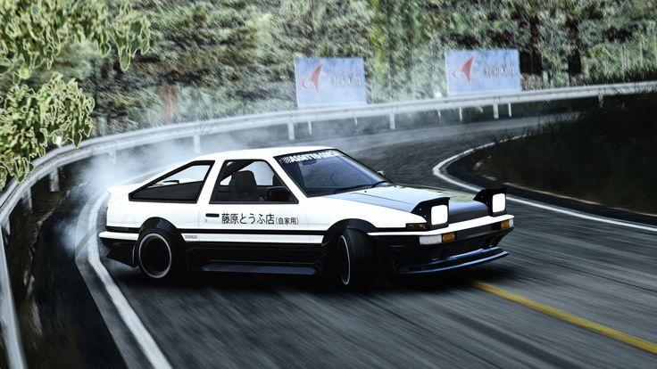

The Legend of Akina

The Akina SpeedStars Ae86, often referred to simply as the "Panda Trueno" isn't just a car; it’s a high-revving ghost that haunts the winding mountain passes of Gunma. Shrouded in the legend of Takumi Fujiwara, this Toyota Sprinter Trueno GT-Apex (AE86) defies the laws of automotive hierarchy, proving that a lightweight chassis and a balanced soul can outrun even the most sophisticated modern supercars. With its iconic black-and-white paint job and the "Fujiwara Tofu Shop" decal emblazoned on the door, it serves as a rolling testament to the art of the drift. Whether it’s screaming through a blind hairpin or executing a gravity-defying gutter run, the 86 represents the perfect harmony between man and machine—a humble delivery vehicle transformed into a "white wing" of pure speed on the downhill.